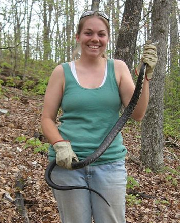
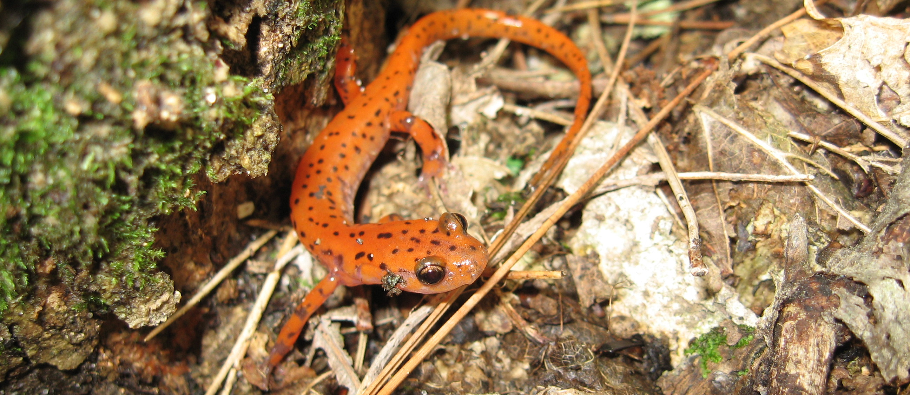
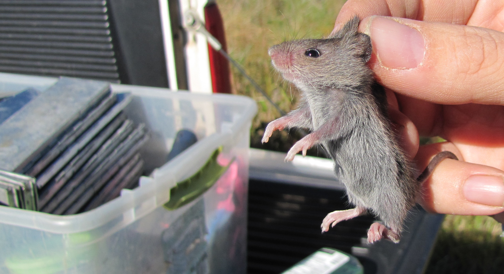
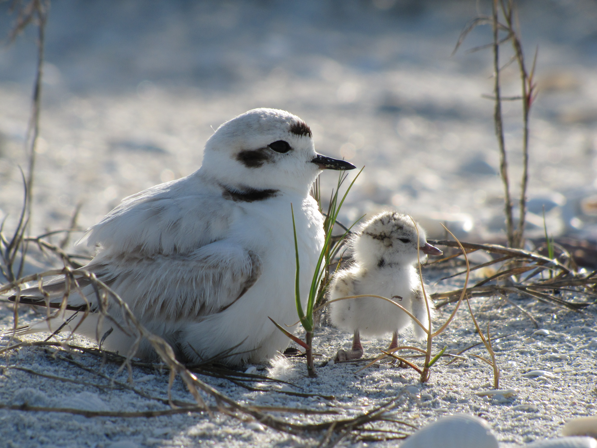
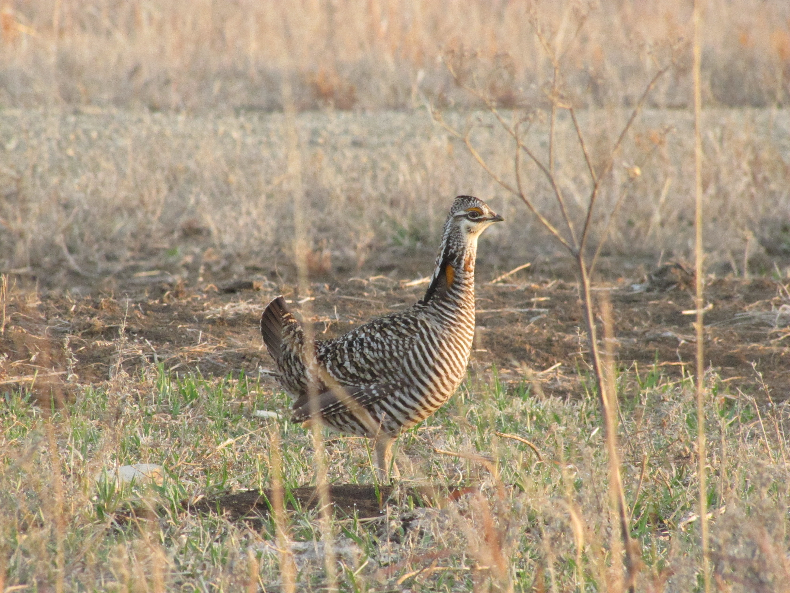
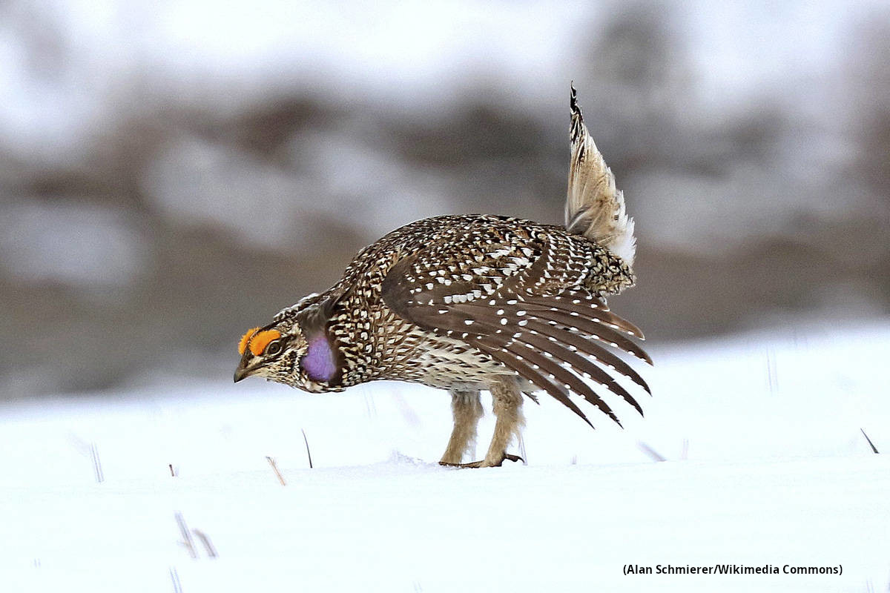

My Time as a Wildlife Biologist

From 2008 to 2015 I worked as a wildlife field biologist. During this time I traveled the country working with birds, mammals, reptiles and amphibians.
The data that I collected was used to inventory species, make management plans and protect threatened species.
Herpetology and Small Mammal Technician

My favorite position as a field biologist was working on a project in the Missouri Ozarks investigating the impacts of forest management on amphibians,
reptiles and mammals. At this position I used various trapping methods to collect animals and identified, measured and marked the animals before releasing them.
This data became part of an ongoing 100 year study designed to test if different timber harvest strategies affected the number of animals present at a location.
Mammal Technician

In northern Alabama I worked on a project designed to inventory the mammals of the region. I used Sherman traps (small metal traps), game cameras and echolocation software to look for small mammals,
large mammals and bats. Some of the coolest animals I encountered were an adorable flying squirrel and a very angry chipmunk that nearly chewed through the metal trap he was in!
Snowy Plover Technician

One of my favorite locations to work was on Sanibel Island in Florida. While there, I led a small team researching Snowy Plovers, a threatened shorebird
species. We collected data on the bird's nest locations, brood survival and food availability. These birds lay their nests directly on sandy ground, which meant I got to walk the beach for work everyday!
Prairie Chicken Research Technician

Even though it was only for 3 months, my time working in Kansas was hands down my least favorite job of all time due to the LONG hours and low pay. Working for
Kansas State University I collected data for a project looking at the effects of wind power development on greater prairie-chickens. Even though I got
hands on experience trapping game birds and using radio-telemetry you couldn't pay me enough to work in Kansas again.
Graduate Research Assistant

In 2012 I moved to East Lansing, Michigan to pursue a masters in Fisheries and Wildlife at Michigan State University. While there, I work with the Michigan
Department of Natural Resources to create a management strategy for sharp-tailed grouse. I did this by modeling the grouse's habitat use and estimating their
response to alternative habitat and harvest management scenarios. It was at this position that I had my first encountered with programming when I used R statistical software
for my analysis.